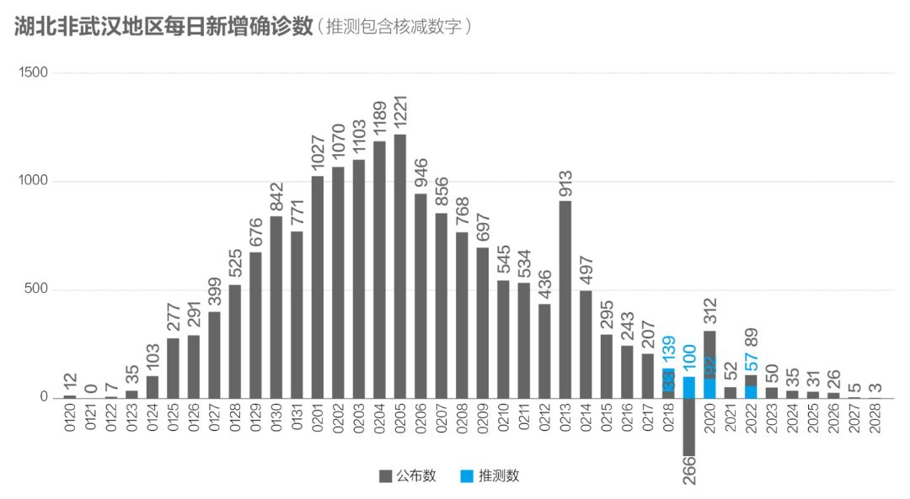
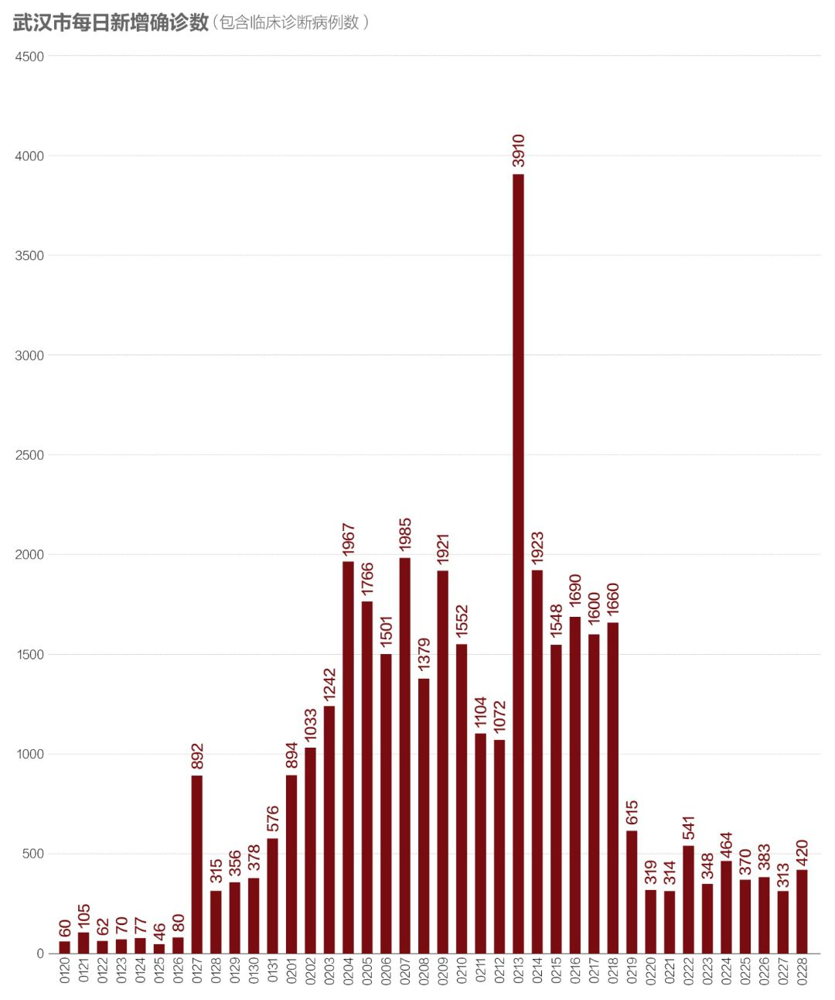
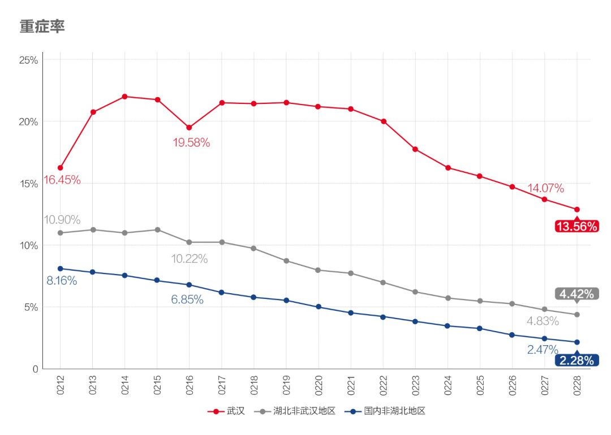
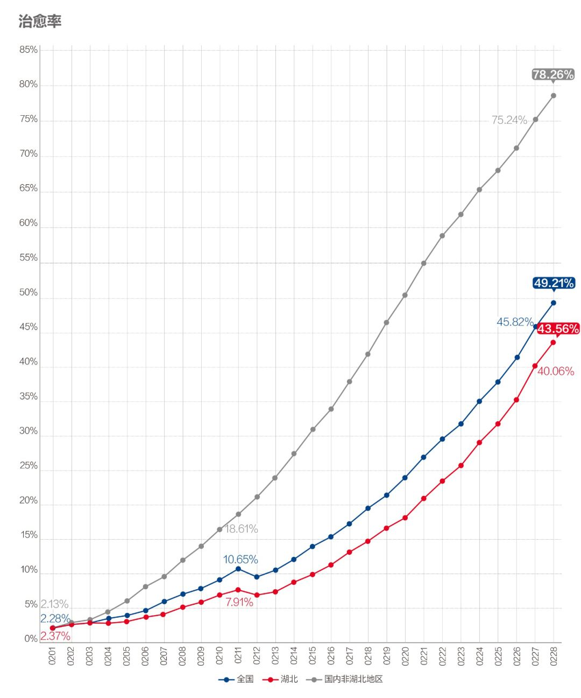
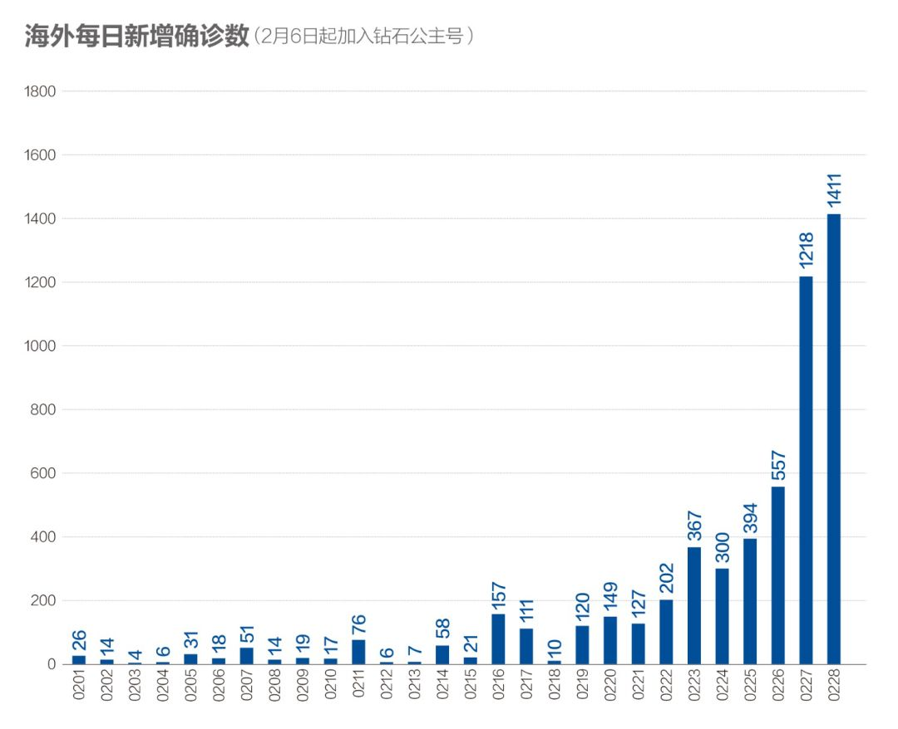
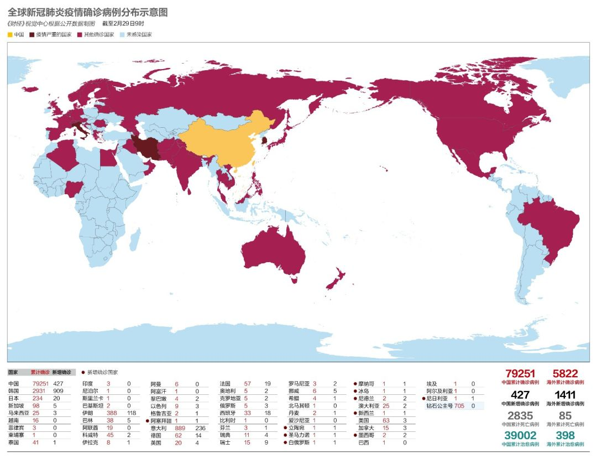

数说疫情0228：非湖北地区新增病例回归个位数，韩国疫情有暴发趋势
原文链接 备份链接 全国确诊病例增长率重回下降通道，海外疫情处在加速扩散阶段 文 |《财经》数据研究员徐进 图 |《财经》视觉中心 编辑 | 谢丽容 郝洲 一、 累计确诊病例：全国总病例数有望控制在8万例左右 截至2月27 …

2月19日以来，武汉新增病例在300-500区间出现一个持续10天之久的“拉锯期”，不难想像战况之惨烈。但指标显示这种胶着局面将很快结束，进入一马平川阶段

文 |《财经》数据研究员 徐进 图 |《财经》视觉中心
编辑 | 谢丽容 郝洲
一、 累计确诊病例：全国总病例数有望控制在8万例左右
截至2月28日24:00，31个省（自治区、直辖市）和新疆生产建设兵团累计报告确诊新冠肺炎病例79251例，新增病例427例。
二、 新增病例：武汉以外地区全面扫尾，武汉继续平台拉锯
图1

图2

国内武汉以外地区总计新增7例（北京确诊的1例亦出自由24日确诊病例追踪隔离的的178位密切接触者），全面进入零星扫尾阶段。武汉以外地区累计新冠病例总数不会突破31000例。
图3

图4 武汉等地新增密切接触者和疑似病例

从2月19日以来，武汉阻击战在300例-500例区间出现一个持续10天之久的“拉锯期”，由此不难想像情况之惨烈。但从同期关键上游数据“密切接触者”和“疑似病例”的流量和存量变动趋势（图4）看，武汉的新增疑似病例已降至114例，将很快结束胶着局面，进入一马平川的阶段。小编没什么文化，但还是想发自内心大喊一声：武汉挺住！
三、 主要上游数据持续全面趋好，说明阻隔措施充分有效
全国密切接触者、疑似病例的新增量和存量都在持续明显下降。其中非湖北地区、湖北非武汉地区的新增疑似病例更回落至两位数水平，说明此次疫情的阻隔措施充分有效。
四、 主要下游数据趋好，说明救治措施不断加强
全国现有在治疗人数持续减少，最近一周平均每天减少2500人，不断释放核心医疗资源，为集中力量打好中央领导提出的武汉保卫战创造条件，重要资源不断向武汉调集。重症率稳步下降，其中武汉尤其明显。治愈率继续以较快速度上升，今明两天将首次跨过50%这个节点。
图5

图6

总之，大局已定。全国其他地区在保持防控力度、抓紧零星扫尾的同时，都屏住呼吸，期待着武汉保卫战尽早结束其艰难拉锯期。这一天指日可待。为武汉加油！
五、 海外新增病例加速增长，发现确诊病例国家范围继续扩大，世卫组织将全球疫情风险等级调至“最高”
图7.1

图7.2

小结：国内武汉以外地区新增病例全面趋零，零星病例确诊前多已处在隔离状态，传染病阻隔基本成功。另一方面，救治能力也在不断增强。武汉有望近日结束艰难拉锯战，海外疫情尚处在早期发展阶段。
**▼ 往期“数说疫情”可点击专题页查看**

▲点击图片查看更多疫情报道
责编 | 黄端 duanhuang@caijing.com.cn
本文为《财经》杂志原创文章，未经授权不得转载或建立镜像。如需转载，请在文末留言申请并获取授权。
原文链接 备份链接 全国确诊病例增长率重回下降通道，海外疫情处在加速扩散阶段 文 |《财经》数据研究员徐进 图 |《财经》视觉中心 编辑 | 谢丽容 郝洲 一、 累计确诊病例：全国总病例数有望控制在8万例左右 截至2月27 …
原文链接 备份链接 国内非湖北地区25日新增病例24例，其中北京10例，从这些地方接受医学观察者数量、新增疑似病例以及待排查疑似病例等上游数据均持续稳步下降的态势看，此数据大幅反弹应属异常 文 |《财经》数据研究员徐进 图 |《财经》视觉 …
原文链接 备份链接 全国多数省区已实现“零新增”，统计上未见疫情卷土重来证据，也未发现意味着疫情死灰复燃的个案 文/《财经》数据研究员徐进 图/《财经》视觉中心 编辑/谢丽容 今天是农历二月二“龙抬头”。按北方农村传统，今起春耕大忙开 …
原文链接 备份链接 全国21省份22日零新增，抗疫战果继续巩固。此前我们预测湖北疑似病例存量，在拉网排查取得成功后会于22日开始下降，最新数据确实印证了该预测 文 |《财经》数据研究员 徐进 图 |《财经》视觉中心 编辑 | 谢丽容 …
原文链接 备份链接 为什么我们说武汉战局出现了反守为攻的转机？主要有3点 文 |《财经》数据研究员 徐进 图 |《财经》视觉中心 编辑 | 谢丽容 一、 累计确诊病例：趋势现“顶” 截至2月21日24:00，全国累计报告确诊新冠肺炎病 …